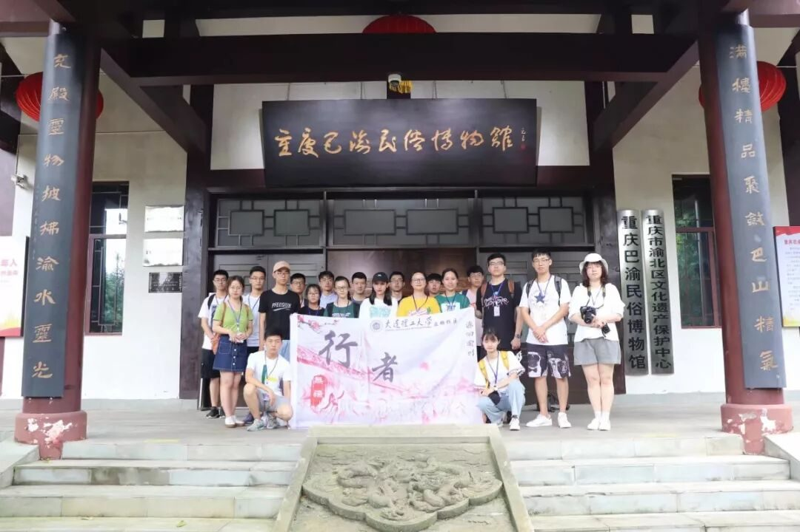
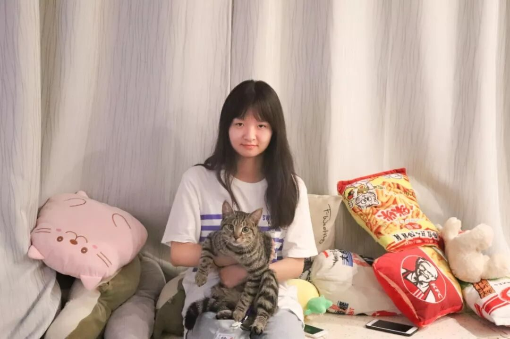
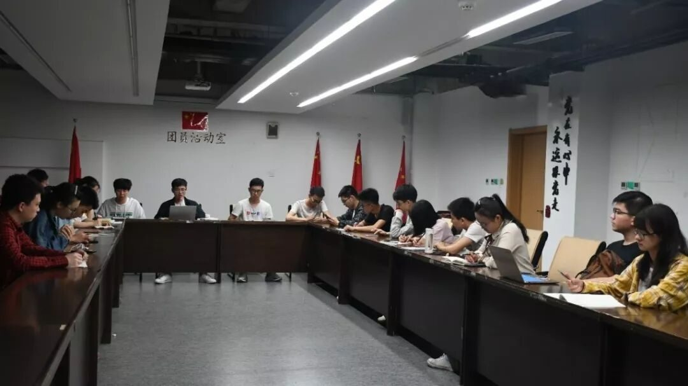
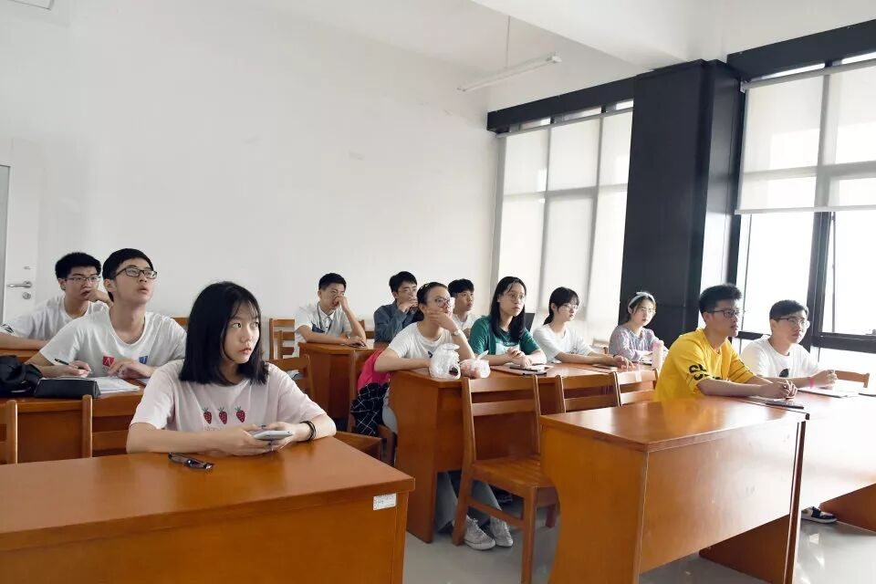
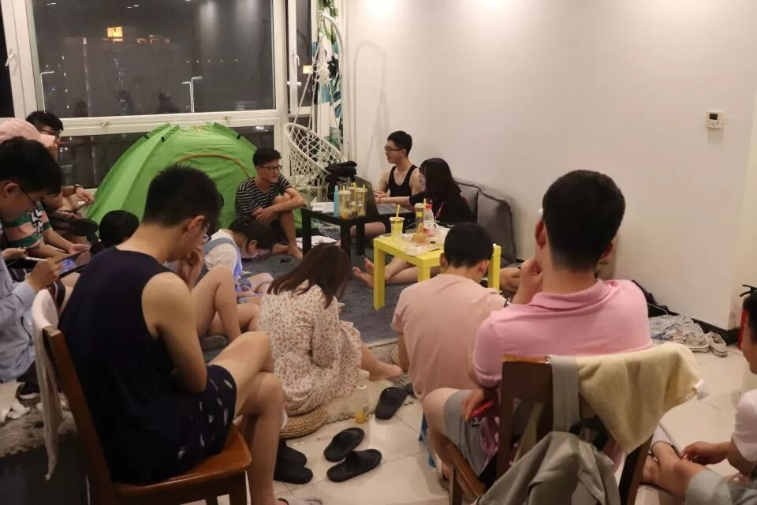
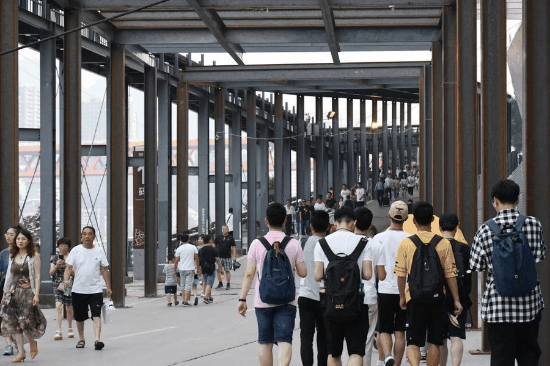

【渝传尺素·十六】我的心，满是露水的七月重庆


六月的一份邮件，我与行者无疆的故事从这里开始。
六月，相识的起点

我记得，第一次的见面会。大家走进会议室都有点拘谨和羞涩。我带着对未来实践的憧憬，开始介绍了自己：“大家好，我是邵琪涵，来自……”大家善意的目光给了我莫大的勇气，这是我要一起共度七天实践的小伙伴们，真好。

小学期，那些在B12的夜晚，我们一起讨论着调研的主题、路线，确定着调研的方法，定下了问卷的内容。最令我感动的是每一次的行者课堂。第一次的课堂，组长以认真严谨的态度给我们讲解了巴渝文化和重英雄文化，那是调研主题还不明确的情况下的大胆尝试，帮助我理清了很多思路。第二次的课堂，让我认识到了我思想上的欠缺，修正了我的调研态度。最让我感动的是，课堂结束后的，大家为我唱了《生日快乐》歌，队长还特地准备了小蛋糕，行者无疆让我真正产生了一种家的归属感。第三次的课堂，是我的个人show，因为不好意思，全程和大家的眼神交流为零。没想到结束之后，有小伙伴暗戳戳地鼓励着我，大家的肯定让我有了自信。

行者
课堂
7.22：调研之旅正式开启。大家每一日奔波于重庆的魔幻3D地形，看到了重庆不同的面貌，见识了重庆多样的文化特色。每个夜晚的小会议，都是大家对重庆的深情告白。会议往往都是十点十一点才会结束，大家的精彩感想，让我有感可发，思想上的高度共鸣，让我们十九个人对彼此更加熟悉了。


十九个人，大家都是那么的独特、可爱，因为行者无疆，大家聚集在一起。我想，这世上最美好的事情就是相遇了吧。每天工作开会到凌晨的队长、文字组、宣传组、摄影组，还有保障着行程的外联组、财务组和外联组，也有负责调研，每天准备调查问卷的调研组。大家分工明确，保障着实践的顺利进行。
在行程中，我的弱项是发问卷。连续被拒绝的尴尬，发不出去问卷的无力，都让我不停地怀疑着自己。但是，每当我孤独无力地时候，都会有人伸出援助之手，“你怎么还有那么多呀，我要好了，我帮你发一些吧。”、“跟着我，我教你怎么发。”、“我觉得那个人会写问卷，我帮你问问。”……
因为大家的付出，“行者无疆”不是冰冷冷的四个字，而是我现在回想起来，还是会感动的一幅幅生动画面。
重庆，带给我的不止是七天六夜的调研行动，还有在街头小巷都能感受到的文化底蕴。
参观的城市规划馆，让我感受到了重庆这座城市的底气与定力。蜀绣、川剧等艺术形式，让我看到了巴渝文化的璀璨和未来发展的希望。民俗小镇、磁器口的参观，让我感受到文化与生活的紧密结合。走进红岩馆、建川博物馆，那段历史如幕布般展现在我面前。天地英雄气，千秋尚凛然。
实践的意义在于有所得，有所思。城市的生活、人情、风貌，体现该城市的精神文化的特质。与重庆相处的几天中，都能让我感受到重庆这座城市“登高涉远、负重前行”的城市精神，不朽于喧哗，不老于世故。重庆就以这样的风骨继续前行。
七月的重庆，火红的夕阳西沉。闪烁着玫瑰色光辉的山峰，漂浮在蓝色的夏日氤氲中。一群行者，走在熙熙攘攘的街头，高谈着今日的收获。那是我永远无法忘却的画面。

来源丨行者无疆实践团
文字丨邵琪涵
排版丨陈嘉颖
审核丨邓子孚 段智然
视频丨陈辉
行者无疆实践团
QQ：2758025831

随行者一起认识世界
长按二维码